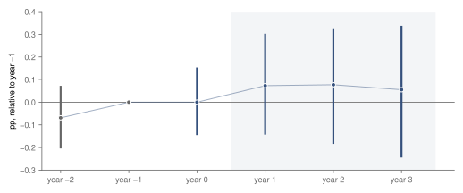
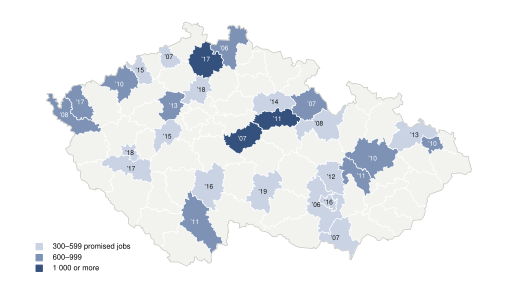
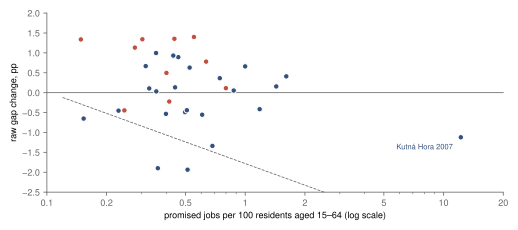
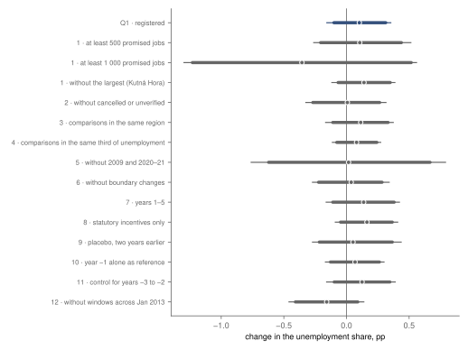

Research · labour · Czech investment incentives and district unemployment, 2004–2024
Unemployment after large Czech investment incentives: +0.10 points, underpowered
Registered result: after 34 promises of at least 300 jobs in 28 districts, the district's unemployment share moved by +0.10 pp relative to districts without such a promise (90 % −0.10 to +0.31 pp), underpowered.
- after the promise (Q1)
- +0.10 pp unemployment share, years 1–3 against the two years before, relative to comparison districts · 90 % −0.10 to +0.31 pp · underpowered · registered
- year by year (Q2)
- +0.11 pp in year 1; +0.03 pp, +0.11 pp and +0.09 pp in years 0, 2 and 3, each against the mean of years −2 and −1 · every 95 % interval includes zero · registered, no label
- per promised job (Q3)
- +0.11 Q1 per promised job per 100 residents aged 15–64; −1 is the direct arithmetic bound · 90 % −0.11 to +0.49 · descriptive, no label
- promises
- 34 in 28 districts incentive decisions 2006–2020 · 45 to 70 comparison districts each · CzechInvest list
Overwhelmed? Here's the short version
- In the three years after a firm was promised a state incentive for at least 300 jobs, the district's registered unemployment share moved by +0.10 pp relative to districts without such a promise. The author expected a small fall; the 90 % interval, −0.10 to +0.31 pp, includes small falls and small rises. The registered label is underpowered: the interval is 0.413 points wide, just over the limit of 0.40.
- On the scale of the promises, the lower end of the interval is about a ninth of the direct arithmetic bound, every promised job taking one available job seeker of the district off the register. That describes an association, not an effect of incentives.
- The sign is fragile. Without the 10 promises whose years straddle January 2013, when the ministry announced a new definition of its unemployment share, the estimate is −0.16 pp (90 % −0.41 to +0.09 pp). In the files used, the base of the share in fact changes in January 2014, a year later (found after the results, not registered).
- The list records promises, not plants. The audit office found in 2021 that the ministry had no duty to compare, and did not compare, the jobs created with those promised, nor to track who filled them; it did check that recipients met the legal minimums.
Czech governments offer tax relief and grants to firms that build or expand a plant and promise to hire. Did registered unemployment in a district fall after a large promise, relative to districts with none at the time? Between 2006 and 2020, 34 incentive decisions promised at least 300 jobs in a single district outside Prague, with no other promise of that size there in the two years before or the four years after; they fell in 28 districts. Each is compared with 45 to 70 districts without such a promise, using the CzechInvest project list1 and the monthly district figures of the Ministry of Labour and Social Affairs (MPSV), July 2004 to December 20242. The questions and the rules for reading the result were fixed under a signed tag before any unemployment figure was read.
In years 1 to 3 after the decision, the unemployment share in these districts moved by +0.10 pp relative to the comparison districts, measured against the two years before. The 90 % interval runs from −0.10 to +0.31 pp: a fall of a tenth of a point is as consistent with the data as a rise of three tenths. Handing each promise instead to a district drawn at random from its comparison pool gives an estimate at least as far from zero in more than half the draws (randomisation p = 0.55). Year by year, the share stays within about a tenth of a point of the year before the decision (fig. 1).
The registered label is underpowered: the 90 % interval is 0.413 points wide, just over the 0.40 the rule allows. With 34 promises, only a change of about 0.26 points either way could have been told from zero, and the design named this label as likely.
Relative to comparison districts, the unemployment share in districts with a large promise stayed within about a tenth of a point of the year before the decision.

How far to trust it
Firms chose where to invest, and until September 2019 the law halved the minimum investment in districts whose unemployment was at least half as high again as the national rate5, so the districts with a promise are not a random draw. The list records promises, not plants: 6 of the 34 were later cancelled and 1 is marked for verification. The audit office found in 2021 that the ministry had no duty to compare, and did not compare, the jobs created with those promised, nor to track who filled them; it did check that recipients met the legal minimums5. And the study changed before its outcome was read: the population field the registered outcome needed is missing from every MPSV file, and the registered rules left 12 events, under the minimum of 20. The author approved MPSV's published unemployment share as the outcome, a clean window from two years rather than four before the decision, and a bar of 300 rather than 200 jobs for projects that exclude a district. Everything added after the results is marked as such and changes no label.
The 28 districts
The promises spread from Cheb in the west to Ostrava in the east (fig. 2), most of them for 300 to 600 jobs, typically 0.45 jobs per 100 residents aged 15 to 64. Cheb, Chomutov, Liberec, Ostrava-město, Pardubice and České Budějovice each had two promises far enough apart to count twice. The largest were FOXCONN CZ s.r.o. in Kutná Hora, 6 400 jobs in 2007; Bombardier Transportation Czech Republic a.s. in Česká Lípa, 1 100 jobs in 2017; and Škoda Auto a.s. in Kvasiny (Rychnov nad Kněžnou district), 799 jobs in 2007.

tools/incentives/districts.py). Base: ČÚZK RÚIAN4; data: CzechInvest1, MPSV2, ČSÚ3.One district: Kutná Hora
Added after the results and not registered: the largest promise, 6 400 jobs for FOXCONN CZ s.r.o. at Kutná Hora, decided on 23 March 2007, in a district of about 52 400 residents aged 15 to 64, so 12.2 jobs per 100. Registered check 1 sets it aside, which is why it is shown; it was picked after the per-promise figures had been computed. In the two years before the decision, Kutná Hora's share was 0.65 points above the mean of its 49 comparison districts; in years 1 to 3, from spring 2008 through the 2009 recession to early 2011, it was 0.47 points below, a raw change of −1.12 pp. If every promised job had taken one available job seeker of the district off the register, the share would have fallen by at least 12.2 points. One district is not evidence: the recession reached districts differently, and the list does not say whom the plant hired.
How large a fall was possible
Q3 puts the change on the scale of the promises. A promise averaged 0.90 jobs per 100 residents aged 15 to 64, pulled up by Kutná Hora (without it 0.55; median 0.45). Q1 divided by that is +0.11 (90 % −0.11 to +0.49). On this scale −1 is the direct arithmetic bound: every promised job going to an available job seeker aged 15–64 of the district, which lowers MPSV's share, available job seekers per 100 residents aged 15–64, by the promise's jobs per 100. In the files used that base holds from January 2014; earlier months divide by a smaller base of about 5.7 million against 7.1 million nationally, where the same jobs lower the share by about 1.24 times as much, so for them the bound is larger and the comparison below is conservative. The interval's lower end, −0.11, is about a ninth of the bound. The bound is not a cap on any effect: jobs at suppliers or from local spending could in principle exceed it, while commuters, people changing jobs, workers from abroad5 and cancelled promises push the other way. Q3 is descriptive and carries no label.
Fig. 3, added after the results, shows the promises one by one. Their raw changes run from −1.94 pp to +1.40 pp whatever the size of the promise, 13 below zero and 21 above, and 7 fell by more than even the bound allows (Most 2015, Ústí nad Labem 2007, Chomutov 2016, Ostrava-město 2020, Liberec 2017, Brno-město 2016 and Opava 2013). The movement from district to district is larger than anything the promises could plausibly bring, which is why 34 of them cannot pin the average down.
Added after the results: the raw changes scatter around zero whatever the size of the promise, and the promises whose years span January 2013 lie mostly above it.

tools/incentives/districts.py). Data: MPSV2, CzechInvest1, ČSÚ3.The check that flipped the sign
Twelve registered checks repeat the analysis with one thing changed, and most land between zero and a sixth of a point (fig. 4; all numbers in the appendix). Two land below zero: the 2 promises of at least 1 000 jobs, too few to read, and check 12. MPSV announced a new definition of its unemployment share from January 2013, so before the outcome was read the design added check 12, which leaves out the 10 promises whose years −2 to 3 contain that month. With the 24 that remain it is −0.16 pp (90 % −0.41 to +0.09 pp). Of the 10 left out, 8 had raw changes above zero, mean +0.73 pp (fig. 3, coral). The definition change, the years 2008–2018 those windows cover or chance among ten districts could explain it; the data cannot tell them apart.
A finding after the results, not registered: in the MPSV files the share's base changes in January 2014, not 2013, so check 12 sits a year early. All 10 promises it leaves out also straddle January 2014, and 3 more do (Most 2015, Cheb 2015 and Beroun 2015); a check at January 2014 was not registered and was not run. Both Q1's interval and check 12's include zero, so the flip shows how fragile the sign is, not that promises lowered unemployment. Leaving out cancelled and unverified promises gives +0.01 pp; a placebo that moves every decision two years earlier, so that it compares only years before the real one, gives +0.05 pp, half the size of Q1.
Every interval includes zero; without the promises whose years span January 2013 the estimate turns negative.

The author's expectation
On 16 October 2026, before reading anything about incentives, the author expected a large promise to lower unemployment in the district a little, barely visible in district figures. The estimate has the other sign, but the interval includes small falls down to −0.10 points: the data neither support the expectation nor rule it out.
What this means
The measured quantity is the change in a district's registered unemployment share in the three years after a promise of at least 300 jobs, relative to districts without one: +0.10 pp, 90 % interval −0.10 to +0.31 pp. The lower end of that interval is about a ninth of the direct arithmetic bound; this describes an association, not an effect of incentives. The sign turns on the 10 promises made from 2010 to 2014; that does not mean those 10 caused it. Whether incentives create jobs, and for whom, the public data cannot say: the ministry did not compare created with promised jobs or track who filled them5.
What this does not show
It does not show an effect of incentives in either direction. The decision date is not the day hiring began: projects are announced earlier and plants open later. Jobs taken by commuters show in neighbouring districts, some of them comparison districts. A district with one large promise and none other for six years may differ from districts that attract many. And registered unemployment moves with the rules for registering, with benefits and, as check 12 shows, with the definition of the share.
Method, details and reproduction
Method: data, events, model and labels
Data and events
The projects are the CzechInvest dashboard table of 2 265 projects, 1 632 of them with an incentive decision1. A project's place, a free-text field, is matched to a municipality and so to its district as of 2024. An event is a decision with at least 300 promised jobs in one district outside Prague, decided between 1 July 2006 and 31 January 2021, so that years −2 to 3 lie inside the data. Of 209 such decisions, 114 fall outside those dates, 5 are in Prague, 8 name several places and 48 fail the clean window: another decision of at least 300 jobs in the same district from 24 months before to 47 months after. Cancelled and unverified promises stay in, so the estimate is of a promise. The comparison districts of an event are those outside Prague with no such decision in the same window, 45 to 70 per event.
The outcome is MPSV's published share of unemployed persons, podilNezamestnanychOsobPNO, in percentage points, for each district and month2, averaged over each twelve-month event year; year 0 starts in the month of the decision. The population aged 15 to 64 in Q3's denominator comes from ČSÚ's year-end stocks3, interpolated to months and averaged over year −1; it enters nothing else.
How this was done
Each event has its own panel of the treated district and its comparison districts over years −2 to 3. Stacked over events (each event's districts and years form their own block), a weighted least-squares regression of the outcome on treated × event-year indicators, with district-by-event and year-by-event fixed effects, gives a coefficient per year relative to year −1, the stacked design of Cengiz and co-authors6. The treated district weighs 1 and each of the n comparison districts 1/n, so every event counts once on each side; because every event has all six years, Q1 equals the mean over events of each district's own gap change, which fig. 3 uses. Q1 is the mean of the year 1–3 coefficients minus the mean of years −2 and −1. Intervals come from 2 000 bootstrap draws, resamples of whole districts with replacement, (seed 20261016; about 21.5 events per draw, none redrawn and none failed) and the randomisation p-value, the share of reassignments giving an estimate at least as far from zero as the real one, from 2 000 random reassignments of each event's treated district within its pool (seed 20261017). Computed in Python with NumPy and pandas7.
Q1 takes the first registered label that applies: lower or higher unemployment after the promise if the 95 % interval excludes zero, the estimate is at least 0.10 points from it and the randomisation p-value is at most 0.05; no change larger than 0.20 points if the 90 % interval lies within ±0.20; underpowered if the 90 % interval is wider than 0.40 points; inconclusive otherwise. A 95 % interval of year −1 minus year −2 that excluded zero would have added “with differing paths in the two years before the promise”. With fewer than 20 events or 15 districts no label would be given.
Before registration and before the outcome
The design discloses what was seen before registration (§0). The author had read nothing about Czech incentives. AI agents, told not to read any unemployment figure, downloaded the project list and counted projects by year, size and cancellation, read the field names of the MPSV files, and read the audit office's report; on counts of the list alone the threshold of 300 jobs was set. On 26 October 2026, from field presence and event counts only, the data step found the population field missing and 12 events left, and the author approved the changes described above; a second change, the same day and still before any outcome, took Q3's denominator from ČSÚ and added check 12. Both are in the change log with the counts as amended: 34 events in 28 districts, 6 of them in a district whose boundary changed in 2007 or 2016.
The registered results in full
Q1 is +0.10 pp (90 % −0.10 to +0.31 pp, 95 % −0.16 to +0.35 pp), randomisation p = 0.55, 34 events in 28 districts; the minimum of 20 events and 15 districts is met, and the 90 % interval is 0.413 points wide, so the label is underpowered. Year −1 minus year −2 is +0.07 pp (90 % −0.04 to +0.18 pp, 95 % −0.07 to +0.20 pp). Q3 is +0.11 (90 % −0.11 to +0.49) on a denominator of 0.90 promised jobs per 100 residents aged 15–64. Q2, each year against the mean of years −2 and −1:
| Event year | Change, relative to comparison districts | 95 % interval |
|---|---|---|
| year 0 | +0.03 pp | −0.13 to +0.21 pp |
| year 1 | +0.11 pp | −0.11 to +0.35 pp |
| year 2 | +0.11 pp | −0.16 to +0.37 pp |
| year 3 | +0.09 pp | −0.22 to +0.39 pp |
Stacked weighted difference in differences, 34 events, 2 000 bootstrap draws of whole districts. Q2 and Q3 carry no label (design §1, §6).
All registered checks, with the table
| Check (design §7) | Change | 90 % interval and 95 % | p | Events · districts |
|---|---|---|---|---|
| 1 · at least 500 promised jobs below the minimum of events | +0.11 pp | −0.21 to +0.44 pp95 % −0.26 to +0.51 pp | 0.67 | 13 · 13 |
| 1 · at least 1 000 promised jobs below the minimum of events | −0.36 pp | −1.23 to +0.52 pp95 % −1.30 to +0.56 pp | 0.63 | 2 · 2 |
| 1 · without the largest (Kutná Hora) | +0.14 pp | −0.07 to +0.35 pp95 % −0.12 to +0.39 pp | 0.41 | 33 · 27 |
| 2 · without cancelled or unverified | +0.01 pp | −0.27 to +0.26 pp95 % −0.32 to +0.32 pp | 0.97 | 27 · 24 |
| 3 · comparisons in the same region | +0.11 pp | −0.11 to +0.33 pp95 % −0.17 to +0.37 pp | 0.41 | 34 · 28 |
| 4 · comparisons in the same third of unemployment | +0.08 pp | −0.08 to +0.24 pp95 % −0.11 to +0.27 pp | 0.51 | 34 · 28 |
| 5 · without 2009 and 2020–21 below the minimum of events | +0.02 pp | −0.62 to +0.67 pp95 % −0.76 to +0.79 pp | 0.97 | 7 · 7 |
| 6 · without boundary changes | +0.04 pp | −0.22 to +0.28 pp95 % −0.27 to +0.34 pp | 0.84 | 28 · 24 |
| 7 · years 1–5 | +0.14 pp | −0.11 to +0.38 pp95 % −0.16 to +0.42 pp | 0.46 | 33 · 28 |
| 8 · statutory incentives only | +0.16 pp | −0.05 to +0.37 pp95 % −0.09 to +0.41 pp | 0.34 | 33 · 27 |
| 9 · placebo, two years earlier | +0.05 pp | −0.22 to +0.37 pp95 % −0.27 to +0.44 pp | 0.75 | 26 · 22 |
| 10 · year −1 alone as reference | +0.07 pp | −0.13 to +0.26 pp95 % −0.17 to +0.30 pp | 0.67 | 34 · 28 |
| 11 · control for years −3 to −2 | +0.12 pp | −0.10 to +0.35 pp95 % −0.16 to +0.39 pp | 0.47 | 31 · 26 |
| 12 · without windows across Jan 2013 | −0.16 pp | −0.41 to +0.09 pp95 % −0.46 to +0.14 pp | 0.42 | 24 · 22 |
Checks are reported, not used to relabel Q1 (design §7). Check 5 keeps 7 events and is reported without a label by design; the placebo (check 9) leaves out 8 events whose shifted years start before July 2004 and compares shifted years 0 and 1 with −2 and −1.
Reproduction and change log
Every number on this page is filled in by a script from results.json, the screening file and districts.json. From the repository root, with the raw files in tools/data/incentives/:
tools/incentives/fetch.py,czechinvest.pyandscreen.py: the project list, the MPSV and ČSÚ files and the screening, with place matching inprojects.py.estimate.py--unblind: the registered estimates and checks, with the Q3 population inpopulation.pyand tests on made-up data intest_incentives.py.districts.py: the per-promise figures, the map and the example district, after the results.article.py: the figures and this page.
The design is docs/research/incentives-design.md. Every change after registration, dated, including both deviations and the figures added after the results, is in the change log.
References
- CzechInvest (2026) Statistika investičních projektů, dashboard table RP_1993-2025, decoded from its public embed. Available at: https://www.czechinvest.org/cz/CzechInvest/Statistika-investicnich-projektu (Accessed: 16 October 2026); sha256 in
docs/research/incentives-files.sha256. - Ministerstvo práce a sociálních věcí (2026) Otevřená data: nezaměstnanost, měsíční údaje za okresy, monthly files July 2004 – December 2024, field
podilNezamestnanychOsobPNO. Available at: https://data.mpsv.cz/od/soubory/nezamestnanost-mesicni/ (Accessed: 16 October 2026); file names and sha256 indocs/research/incentives-mpsv-files.sha256. - Český statistický úřad (2025) Obyvatelstvo podle pohlaví a základních věkových skupin, open data set 130149, districts, 31 December 2000–2024. Available at: https://csu.gov.cz/produkty/obyvatelstvo-k-3112-podle-pohlavi-v-obcich (Accessed: 26 October 2026).
- Český úřad zeměměřický a katastrální (2026) RÚIAN: obce (SHP, EPSG:5514), dissolved into districts. Available at: https://services.cuzk.gov.cz/shp/stat/epsg-5514/1.zip (Accessed: 15 October 2026).
- Nejvyšší kontrolní úřad (2021) Kontrolní závěr z kontrolní akce 20/13: Investiční pobídky, approved 22 February 2021. Available at: https://nkuweb.nku.cz/assets/kon-zavery/K20013.pdf (Accessed: 16 October 2026).
- Cengiz, D., Dube, A., Lindner, A. and Zipperer, B. (2019) ‘The effect of minimum wages on low-wage jobs’, The Quarterly Journal of Economics, 134(3), pp. 1405–1454. doi: 10.1093/qje/qjz014.
- Harris, C.R. et al. (2020) ‘Array programming with NumPy’, Nature, 585, pp. 357–362, doi: 10.1038/s41586-020-2649-2; McKinney, W. (2010) ‘Data structures for statistical computing in Python’, Proceedings of the 9th Python in Science Conference, pp. 56–61, doi: 10.25080/Majora-92bf1922-00a.